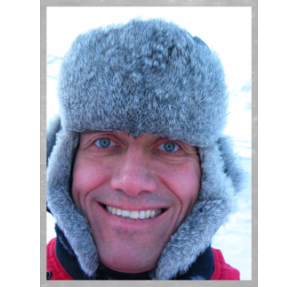

Dr. Ralf GreveProfessor, Glacier and Ice Sheet ResearchProfile Welcome to my "icy" homepage! ✻ ✻ ✻ ✻ ✻ I am a professor at Hokkaido University's Institute of Low Temperature Science in Sapporo, Japan. A physicist by training, my main focus is on the evolution, dynamics and thermodynamics of the Earth's ice sheets, using numerical modelling. I am the author/co-author of more than 100 peer-reviewed scientific papers and two textbooks on ice dynamics and continuum mechanics, serve as an Associate Chief Editor for the Journal of Glaciology and maintain the open-source ice-sheet model SICOPOLIS. For further details, please have a look at my profile at Researchmap (bilingual English/Japanese) or my curriculum vitae (PDF file). Research projectsList of projects with me as principal or co-investigator → Researchmap. PublicationsList of publications (co-)authored by me (including work 'in press' or 'submitted'). Software development
Classes
ContactFor contact information, please see here.
Go to:
Information about the Rironseppyou Network (Rironnet). |
|
|